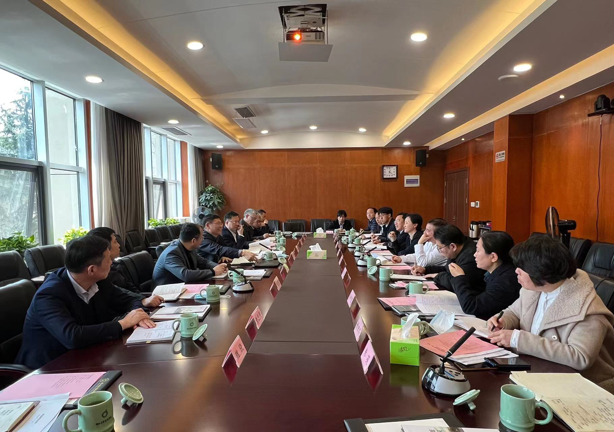
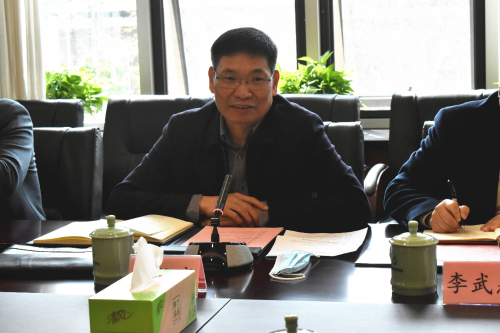

| 索引号： | 00248247X/2022-03159 | 公开方式： | 主动公开 |
|---|---|---|---|
| 文号： | 公开日期: | 2022-05-09 | |
| 发布单位： | 浙江省粮食和物资储备局 | 有效性: |
为深入贯彻习近平总书记关于“藏粮于地、藏粮于技”的指示精神和省委农村工作会议暨粮食安全工作会议精神，更好推动种业技术支撑粮食安全，服务“五优联动”，支持优质粮食工程建设，促进粮食产业高质量发展，带动农民增收、企业增效，让消费者满意，助力共同富裕，3月24日上午，省粮食物资局党组书记、局长周维亮带队赴省农科院走访调研，省局党组成员、副局长李武杰，省粮食集团党委书记、董事长王其达，省局办公室、粮食处、安监处及省储备粮公司、宝隆米业公司负责人参加。
在省农科院党委书记劳红武陪同下，调研组品鉴了优质粮食新品种，实地考察了作物与核技术利用研究所、农产品质量安全与营养研究所、植物保护与微生物研究所、病毒学与生物技术研究所等科研机构及实验室和检测仪器设备，详细了解优质粮油新品种研究、农产品质量安全技术检测、生物防控技术研究、作物遗传转化研究等情况，参观了院史馆和科技成果展馆，并召开座谈会就有关问题进行深入交流讨论。
座谈会上，省农科院党委副书记、院长林福呈从粮油新品种培育、育种技术手段创新、加工及质检技术研发、技术成果转化推广等方面，介绍了近年来省农科院在粮油领域取得的科研成果，并对下一步深化合作提出工作设想。双方重点就“五优联动”提质增效、超标粮食问题破解、政院企产学研合作等进行了深入交流探讨。
周维亮指出，粮食安全是“国之大者”，要确保粮食有效供给，必须坚持问题导向、目标导向，做好基础性工作，把“藏粮于地、藏粮于技”真正落实到位。省农科院是促进全省农业科技整体跃升的主力军，长期以来为我省粮食安全保障发挥了重要的科研支撑和服务作用。
周维亮强调，下一步双方要建立常态化联动工作机制，持续加强交流、凝聚共识、细化举措，切实推动此次调研启发的好思路好方法转化为具体行动、生动实践，共同为筑牢粮食安全“压舱石”履好职尽好责，在共同富裕大场景中展现使命担当。一是要共同推动粮食安全责任落细落实。聚焦将粮安办工作往细处抓、往实处干，充分吸收省农科院优势力量，加大协同研究力度，形成更多专业化咨询成果，进一步增强粮食安全责任制考核的科学性和精准性，真正发挥好考核“指挥棒”“推进器”作用，压紧压实各方责任，不折不扣完成各项任务，牢牢守住粮食安全底线。二是要共同推动“五优联动”全省域推进。聚焦进一步优化产品结构，瞄准全产业链安全，在优质品种研发、先进技术推广上下功夫，把论文写在大地上，解决实际问题、创造更多成果、惠及更多百姓。聚焦进一步促进农民增收，充分发挥有效市场作用，整合多方资源要素，搭建粮食科研成果展示、对接、交流平台，促进产学研一体化发展，提高粮食产业效率和效益，让粮食企业有竞争力，让种粮农民有钱赚。三是要共同推动双方合作空间深化拓展。坚持从实际出发，保持前进感，适应新形势，把握新要求，着眼新目标，持续不断深化拓展双方合作空间，并与农业农村、自然资源、科技、财政等部门有效联动，在超标粮问题根本性解决、粮食作物实现优质高产耐储等方面取得突破性成果，为老百姓端稳“饭碗”，而且饭碗里要有浙江本地的优质粮。